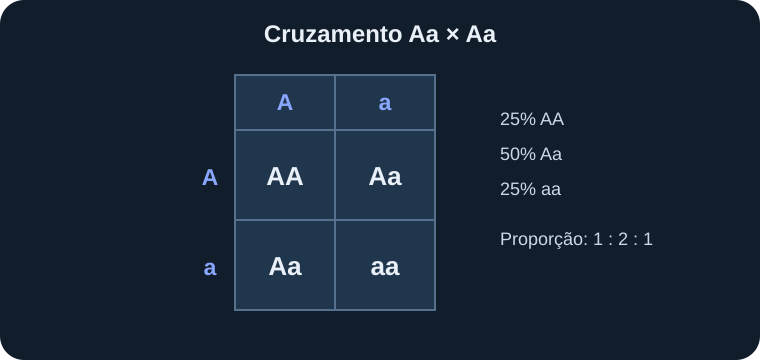

Princípio da uniformidade
Quando dois indivíduos de linhagens puras diferem em uma característica e são cruzados, os descendentes da primeira geração filial podem apresentar o mesmo fenótipo para essa característica. Isso ocorre no modelo clássico quando um dos alelos apresenta dominância completa sobre o outro.
Exemplo: no cruzamento AA × aa, o primeiro progenitor só produz gametas A e o segundo só produz gametas a. Todos os descendentes recebem A de um lado e a do outro, ficando Aa. Se A for dominante, todos apresentam o fenótipo dominante.
Primeira Lei: segregação dos alelos
A primeira lei, chamada princípio da segregação, afirma que os dois alelos de um indivíduo se separam durante a formação dos gametas. Assim, cada gameta recebe apenas um alelo de cada par. Na fecundação, os alelos voltam a se reunir.
Considere um indivíduo Aa. Durante a formação dos gametas, parte deles recebe A e parte recebe a. Em um modelo simples, os dois tipos são produzidos em proporções iguais. Isso explica como uma característica recessiva pode reaparecer em descendentes, mesmo quando não se manifesta em um indivíduo heterozigoto.
Exemplo de cruzamento: Aa × Aa
Quando dois indivíduos heterozigotos Aa são cruzados, cada um pode formar gametas A ou a. As combinações possíveis são AA, Aa, aA e aa. Como Aa e aA representam o mesmo genótipo, a proporção genotípica esperada é 1 AA : 2 Aa : 1 aa.
Se houver dominância completa de A, a proporção fenotípica esperada será 3 dominantes : 1 recessivo. Essas proporções representam probabilidades; não significam que todo grupo de quatro descendentes terá obrigatoriamente três de um tipo e um de outro.
Segunda Lei: segregação independente
A segunda lei, ou princípio da distribuição independente, afirma que pares de alelos de genes diferentes podem ser distribuídos independentemente durante a formação dos gametas. Esse princípio se aplica de maneira direta quando os genes estão em cromossomos diferentes ou suficientemente afastados no mesmo cromossomo.
Em um cruzamento dihíbrido AaBb × AaBb, considerando dominância completa e distribuição independente, os gametas possíveis são AB, Ab, aB e ab. A proporção fenotípica clássica esperada é 9:3:3:1. Essa proporção depende das condições do modelo e não deve ser aplicada automaticamente a qualquer par de características.
Quando os padrões mendelianos não se aplicam de forma simples
Nem todas as características seguem dominância completa ou segregação independente. Há casos de dominância incompleta, codominância, alelos múltiplos, genes ligados no mesmo cromossomo e características influenciadas por muitos genes e pelo ambiente.
Por isso, as leis de Mendel são modelos fundamentais para compreender a hereditariedade, mas a análise de situações reais pode exigir conceitos adicionais.